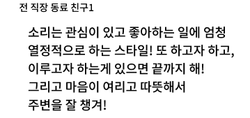
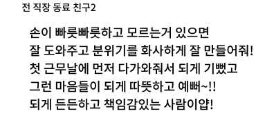
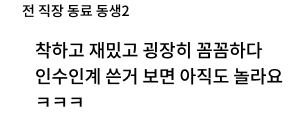
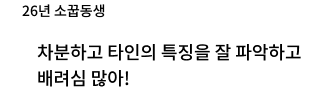
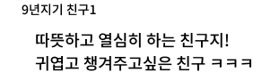
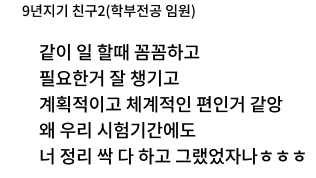
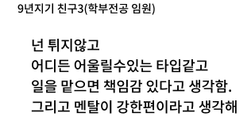
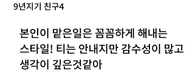

ABOUT
1995.11.27. 경기도 성남
2022.04 ~ 2022.09 : 강남그린컴퓨터아카데미 (UI/UX 웹디자인, 웹퍼블리셔 모바일 컨텐츠 개발 양성과정) 수료
2021.09 ~ 2022.03 : 오디에이션 음악교육 행정실무, 음악교사 인턴 재직
2019.03 ~ 2021.08 : 숙명여자대학교 특수대학원 수료
2014.03 ~ 2017.02 : 침례신학대학교 교회음악과 졸업
2011.03 ~ 2013.02 : 성남 효성고등학교 졸업
-

-

-

-

-

-

-

-

SKILL
웹페이지 디자인 시안 그대로
마크업과 스타일을 입힐 수 있다.
CSS3과 SCSS로 다양한 효과와
움직을 구현할 수 있다.
scroll
click
mouseover
slide
fadeIn,fadeOut
dropdown
간단한 if/for문
header, footer load
기본 툴 사용할 수 있다.
웹페이지와 UI/UX 디자인을
제작할 수 있다.
웹 호스팅할 수 있다.
TYPE
-
MBTI 유형 ISFJ
-

끈기가 있고 성실하다.
-
책임감과 인내력이 강하다.
-
수치 및 디테일에 강하다.
-
현실적인 판단에 능하며, 계획을 잘 실천한다.
-
온정적이고 헌신적인 타입
-
ISFJ의 직장생활
-
다른 사람들을 실질적으로 도울 수 있다.
-
뒤에서 일하면서 헌신과 공감을 표현할 수 있는 일을 잘 한다.
-
세심하고 조직적인 방식으로 매듭을 짓는 일을 잘 한다.
-
한 번에 하나의 프로젝트를 할 수 있는 일을 좋아한다.
-
사전에 준비할 시간이 충분한 일을 좋아한다.
-
에니어그램 유형 9번-1번날개
-
일상적, 도덕적인 행동을 추구한다.
-
낙관적이며 질서정연하다.
-
차분하고 겸손해보이지만 완벽 주의적 기질.
-
평화유지를 추구한다.
-
갈등을 피하고 자신의 신념을 굳건히 지키며 살고싶어 한다.